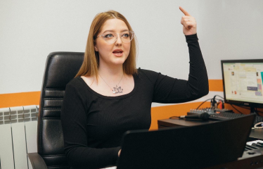

<section class="learn">
  <div class="container">
    <h2 class="learn__title">Чему научитесь на уроках вокала</h2>


    <ul class="learn__list">
      <li class="learn__item">
        <div class="learn__number">01</div>
        <div class="learn__desc">
          Естественному дыханию: оно даст силы для громкого и чистого пения
        </div>
      </li>
      <li class="learn__item">
        <div class="learn__number">02</div>
        <div class="learn__desc">
          Долго петь, не напрягаясь, делать звук полётным и объемным
        </div>
      </li>
      <li class="learn__item">
        <div class="learn__number">03</div>
        <div class="learn__desc">
          Свободно и выразительно говорить. Так, чтобы тебя услышали
        </div>
      </li>
      <li class="learn__item">
        <div class="learn__number">04</div>
        <div class="learn__desc">
          Понимать как и петь сложные высокие партии в песнях, о которых ты давно мечтал
        </div>
      </li>
      <li class="learn__item">
        <div class="learn__number">05</div>
        <div class="learn__desc">
          Избавляться от телесных и психологических зажимов, побеждать стеснение
        </div>
      </li>
      <li class="learn__item">
        <div class="learn__number">06</div>
        <div class="learn__desc">
          Выступать под живую музыку, уверенно чувствовать себя на публике
        </div>
      </li>

    </ul>

    <div class="learn__img">
      <picture>
        <source media="(min-width: 1200px)" type="image/webp" srcset="../../img/learn@desktop.webp">
        <source media="(min-width: 1200px)" srcset="../../img/learn@desktop.png">
        <source type="image/webp" srcset="../../img/learn@mobile.webp">
        
      </picture>


    </div>
  </div>
</section>
